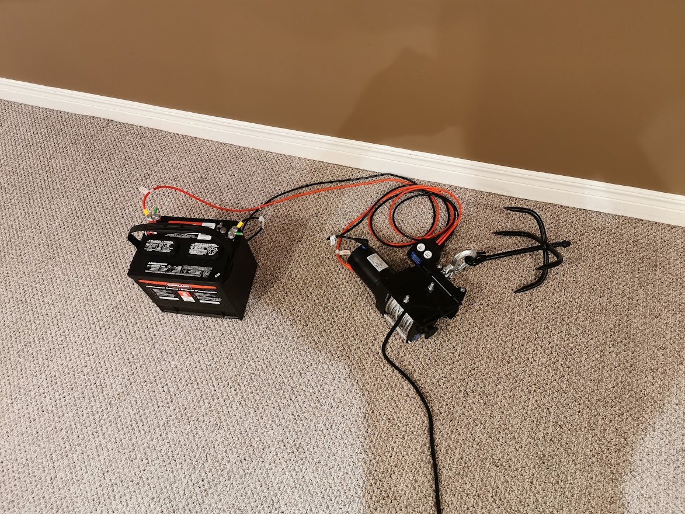
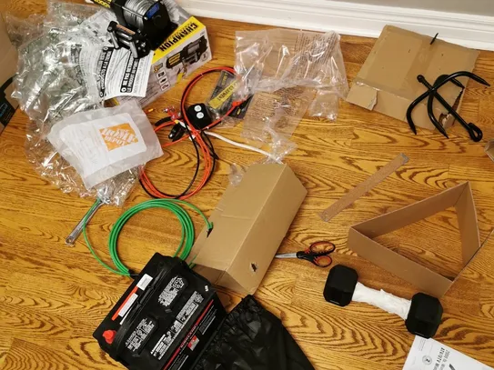
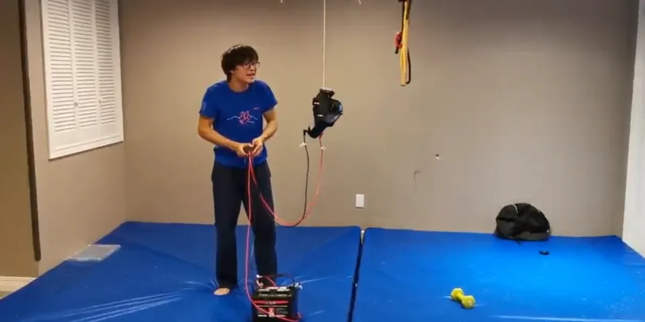
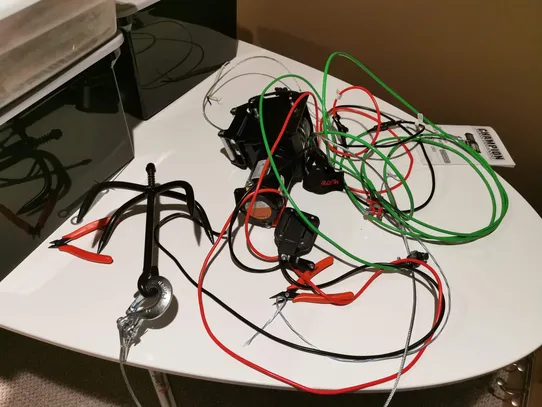

THE GRAPPLING HOOK MARK 1

Introduction
Everyone who has tried using a grappling hook attached to a rope knows that it's near impossible to climb the rope because it's so thin. My friends and I learned that the hard way. I engineered a solution. I present to you the Grappling Hook Mk. I!
The Concept
My greatest concern was a device that would pull me upwards, and because this was a proof of concept, optimizing weight or aesthetics was not a concern. The first thing that came to my mind was a power winch, so I included that in my final design. To power the winch, I required a 12 Volt battery, which I found after a bit of digging. My idea was to throw the hook after attaching the end of the hook to the winch cable and pull myself up using the winch while wearing a harness connected to the winch itself. The battery would have to remain on the ground because it was too heavy. My goal was to throw the hook onto a tree in my backyard and use the winch to pull myself up at least a meter.
The Materials
There were a few challenges associated with the materials. First of all, the winch consumed a LOT of power, so I needed to look for a 12 Volt battery that had a capacity of over 10 Ah and an output of 30 Amps. I had to go to multiple stores until I found one at Costco that was close to my requirements. I was also able to return the battery to the store for a refund afterward. As for the winch, I just bought the cheapest one I could find. I also bought 8 gauge wires at Home Depot to connect to the winch as the ones that came with the winch were too short. In addition, I had to purchase a harness that I'd tie to the winch.
The Assembly
Assembly wasn't too difficult. Thanks to my design drawings, it wasn't too difficult to create. The winch, which weighed 20 pounds, needed me to screw in rollers and an included attachment that I'd tie my rope to. I cut the rope that came with the grappling hook and burned both ends and tied it to the winch and the harness. I also clipped the extension wires and attached them to the battery and the winch. Then, I attached the grappling hook to the end of the winch. It took a few hours, but most of it was rework since it was my first time working with something like this.
The Testing
It was about 2am when I entered the testing phase, but that didn't bother me. I attached the winch to a hook on the ceiling and connected it to the battery. I was mainly testing to see if the winch worked at all and if it could pull its own weight, to which it could. That was enough testing for me.
The Results

The next day, I brought everything to the backyard and threw the hook onto the tree. Then, I got in the harness and used the winch to pull myself up, which was connected to the battery on the ground (as it was too heavy to bring up with me). It was a success! Watch a video of the prototype in action here:
The Conclusion
Although it only took hours to assemble and test, it actually took weeks of planning and designing in order to get a device this simple to work. But again, it IS a proof of concept. The combined weight of everything exceeds 60 pounds and ascends at a snail-like speed of 3 cm per second (which means it would take a full MINUTE to ascend a 2 meter ledge!) It is not by any means portable or practical. However, I learned so much from the whole process and I got inspired to keep innovating. I believe the cost of the project, which was about $250, was justified through the experience and thrill of building such a contraption. I have no regrets.
The Parts List
If you want to build this hook for yourself, I've included a parts list here. Everything is bought in the area where I lived, but feel free to substitute similar parts. I am not liable for any injuries or deaths this may cause.
- Winch - https://www.amazon.ca/Champion-Power-Equipment-12003-Winch/dp/B00BKW444K/ref=sr_1_5?dchild=1&keywords=winch&qid=1602454330&sr=8-5
- Hook - https://www.medievaldepot.com/products/ninja-grappling-hook?variant=22539108679762¤cy=CAD&utm_medium=product_sync&utm_source=google&utm_content=sag_organic&utm_campaign=sag_organic&utm_campaign=gs-2019-07-15&utm_source=google&utm_medium=smart_campaign
- Harness - https://www.amazon.ca/gp/product/B06WD4DDYT/ref=ppx_yo_dt_b_asin_title_o09_s00?ie=UTF8&psc=1
- Extension wires - 8 gauge, I got 5 metres of it at my local Home Depot from this big roll of wires and had a worker cut it for me.
- Battery - I bought it at Costco in person and there's no link for it on the online store either, just find one that meets or exceeds a 10 Ah capacity and 30A output. They're going to be heavy, though, mine weighed 36 pounds.
Happy building!